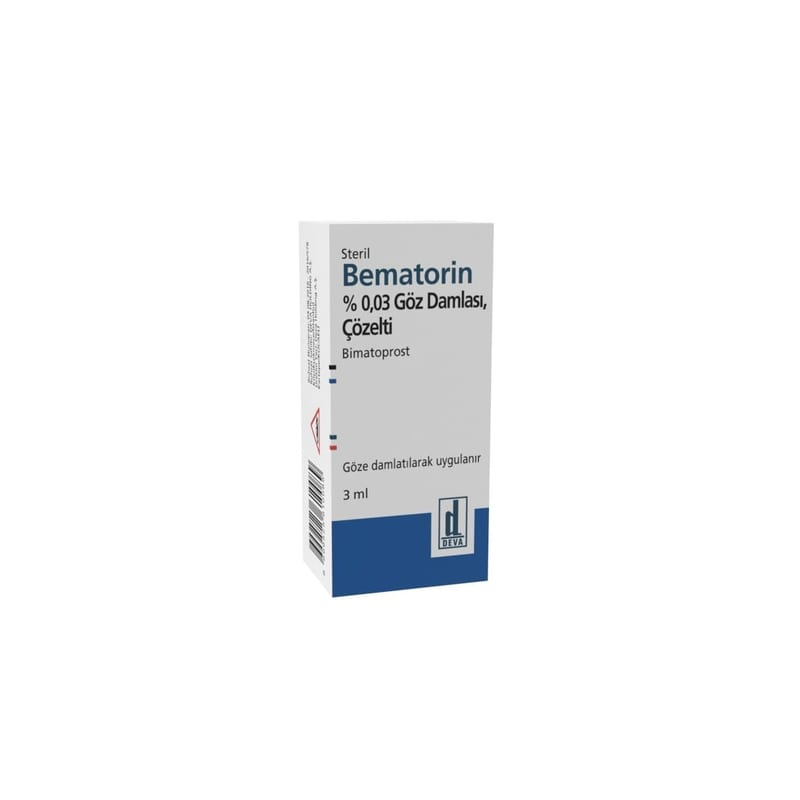

Bematorin % 0,03 Göz Damlası, Çözelti (3 ml)

Ne için kullanılır
KT · Bölüm 1BEMATORİN, 3 mL’lik plastik şişede kullanıma sunulan bir göz damlasıdır.
BEMATORİN etkin madde olarak bimatoprost içerir, bimatoprost prostamidler adı verilen ilaç grubunun bir üyesidir.
BEMATORİN bir antiglokom preparatıdır.
BEMATORİN, gözdeki yüksek basıncı düşürmek için kullanılır. Tek başına ya da beta blokerler adı verilen ve gözdeki yüksek basıncı düşürmek için kullanılan başka ilaçlar ile birlikte kullanılabilir.
Gözünüz, gözün iç tarafını besleyen berrak, su gibi bir sıvı içermektedir. Bu sıvı sürekli olarak gözün dışına boşaltılmakta ve bunun yerini yeni yapılan sıvı almaktadır. Sıvı dışarıya yeterince
hızlı olarak boşaltılmaz ise, gözün iç tarafındaki basınç artar. BEMATORİN, boşaltılan sıvı miktarını artırarak etki gösterir. Bu durum göz içindeki basıncı azaltır. Eğer yüksek basınç azaltılamazsa, glokom adı verilen bir hastalığa yol açabilir ve bu durum görmenizi bozabilir.